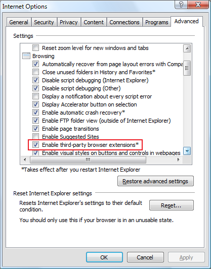

What to do when Classic Explorer doesn't work?
- Open a new Windows Explorer window (Win key+E)
- For Windows 7: Press Alt+V to open the View menu. Open the "Toolbars" sub-menu and select "Classic Explorer Bar". Keep in mind that the menu will always be displayed as long as the toolbar is visible.
- For Windows 8/8.1 and Windows 10: Press Alt+V to open the View tab of the ribbon. Click on the down arrow in the "Options" section. Select "Classic Explorer Bar".
- Run Internet Explorer and go to Tools -> Manage Add-ons. Find "Classic Explorer Bar" and "ExplorerBHO Class" and make sure they are both Enabled.

- Open the Internet Options and go to the Advanced tab. Find and check the option "Enable third-party browser extensions". This is usually enabled by default, but may be disabled for server editions of Windows.

Note: You may have to repeat the process if you install a new version of Internet Explorer (like IE9, IE10, IE11).
Also, due to a bug in Windows, sometimes File Explorer gets confused between addons, especially when there are multiple addons and one of the addons is updated or uninstalled & reinstalled. To fix this, open Registry Editor (Regedit.exe), go to HKEY_CURRENT_USER\Software\Microsoft\Internet Explorer\Toolbar\ShellBrowser and delete the ITBar7Layout value. Thereafter, Explorer won't get confused which toolbar it enables/disables. After deleting the ITBar7Layout value, you must enable the Classic Explorer toolbar once again in Explorer as mentioned above.